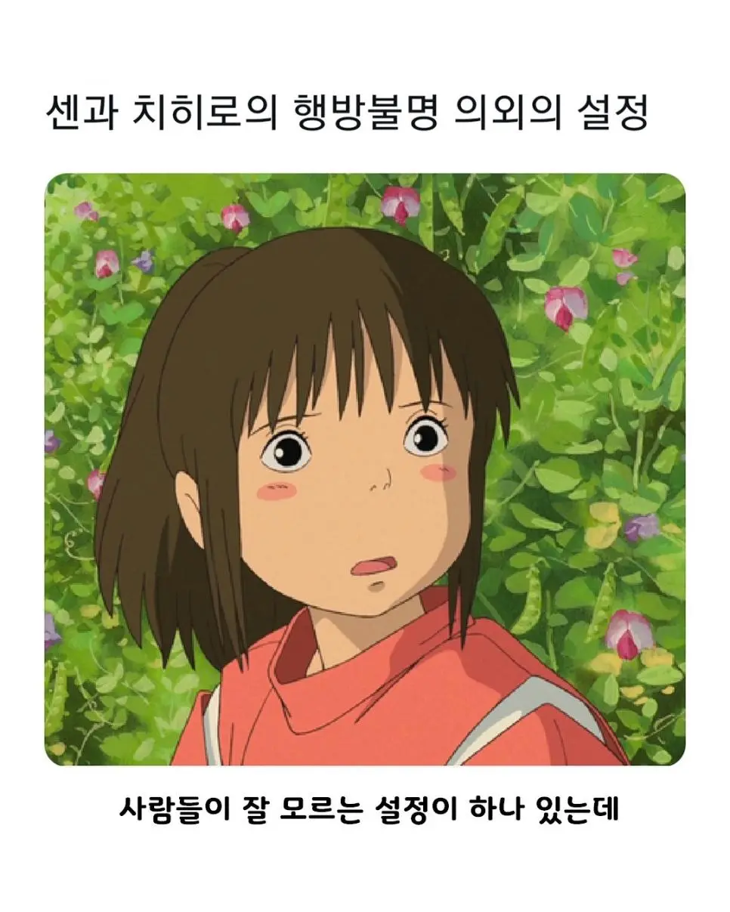
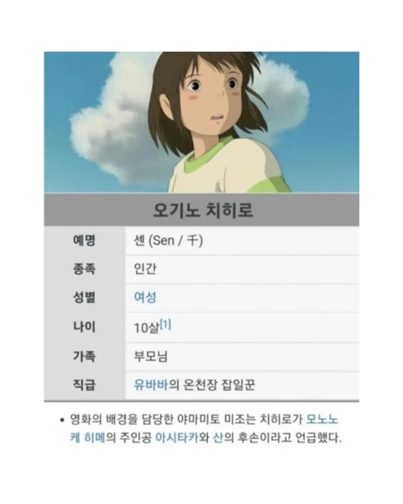
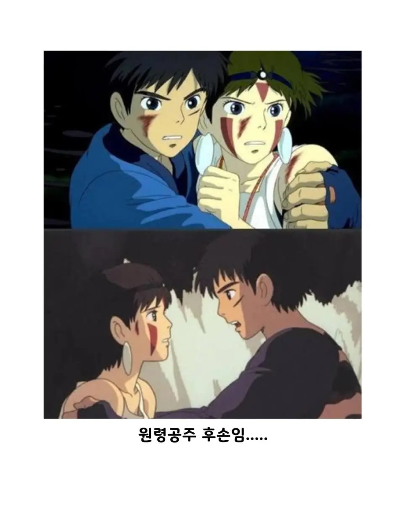

대체 중간에 어떤 유전자가 들어왔길래...



대체 중간에 어떤 유전자가 들어왔길래...


그랬으면 예뻤겠지
아빠 닮아서 못생겼잖아
고추 큰 남자랑 바람 폈을 거야
미간 조금 모이고 눈 커지면 비슷할꺼같긴하네...
근데 산이랑 아시타카 결국 하긴 했네... 산이 자연에서만 살겠다고 한것치곤 계속 찾아가서 노력했구만
어차피 마을 뒷산이라 멀지도 않음 ㅋㅋㅋ
수천년이 지나면 외모는 흐릿해질수밖에
다마고치 못생긴 유전자짤 생각나네 ㅋㅋㅋㅋㅋㅋㅋㅋㅋㅋㅋㅋㅋㅋㅋㅋㅋㅋㅋㅋㅋㅋㅋㅋ
개빻은 새끼들만 계속 나옴..
아니 아시타카 미남유전자 어디가고 치히로 아빠가 나옴
엄마쪽 조상일지도
딱 아빠 닮았는데 왜
이거 누가 자꾸 퍼뜨리는 건지 모르겠는데 오피셜로 그런 설정 나온 적 없음
보추암컷타락개붕이가
https://flying-fantasy-garden.blogspot.com/2014/06/blog-post_19.html
코믹북 별책 부록에서 작화 담당자들이 적어놓은 아무말 대잔치에 수록된 내용이고, 해당 설정은 배경 담당인 야마모토 '니조'가 적어놓은 말임. 저기 내용 보면 치히로는 사실 유바바의 세상도 꽤 좋다고 생각해서 바다 건너에서 돼지 부모님과 함께 가게를 차렸을지도 모른다~ 같은 작품 내러티브와 전혀 안맞는 내용도 수록되어 있어서 저게 오피셜일 확률은 낮고 그냥 본인 생각을 적어둔 것에 가까움
0.0001% 조상이라고 하죠 ㅇㅇ
중간에 온천장 두꺼비 섞인거 아니냐고ㅋㅋㅋ
일단 친가쪽은 확실히 아니고
질퍽이가 언제 섞였어..
벨라 램지
오피셜 아님 ㅋㅋ
새삼 치히로 개빻앗네 ㅋㅋㅋㅋㅋ
그.. 뭐냐. 죽어라
미간 사이가 먼거보니 다운증후군이네
보통 댜른 작품들처럼 이쁘게 안만든 이유가 보통 여자애들처럼 평범하게 생긴 캐릭터로 만들어서 좀더 어린애들이 쉽게 자신과 투영할수있도록 저렇개 만들었다 들은거같음.
저 정도 세대차이면 후손이 의미가 있나
치히로 아빠 생김새 보면
엄마가 백퍼 바람핌